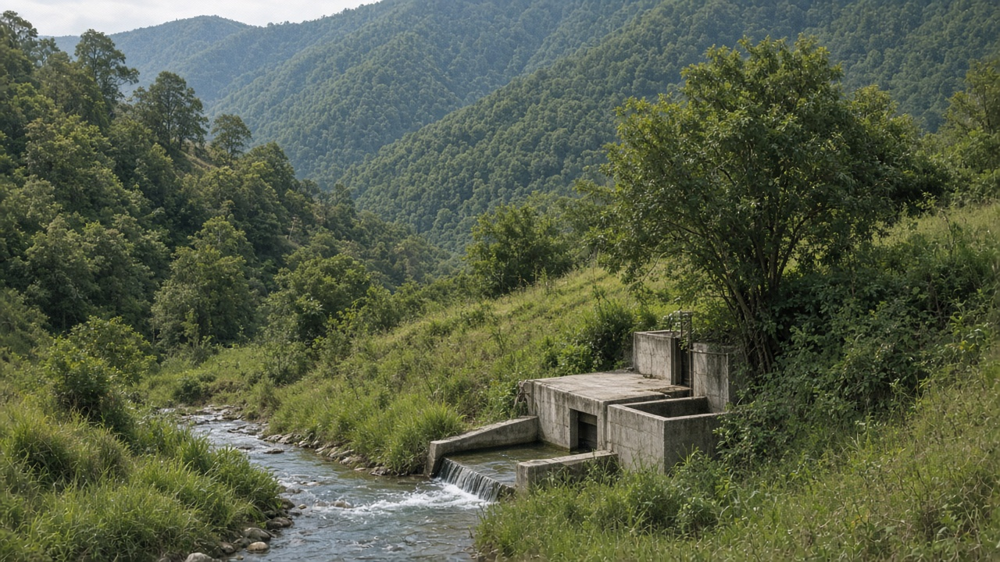
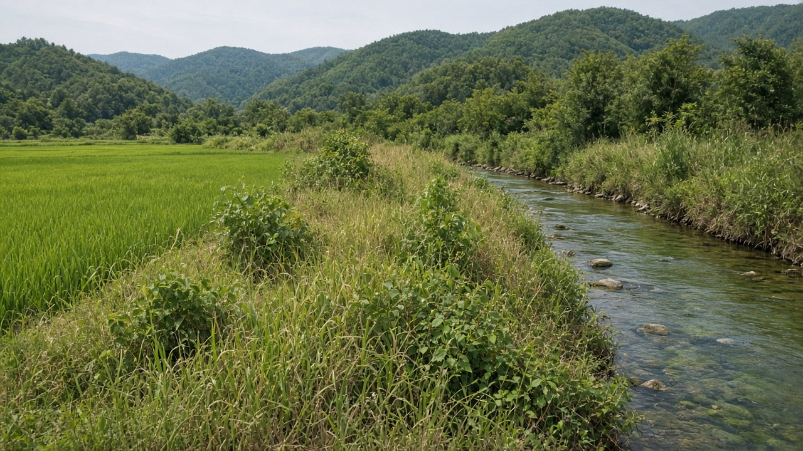
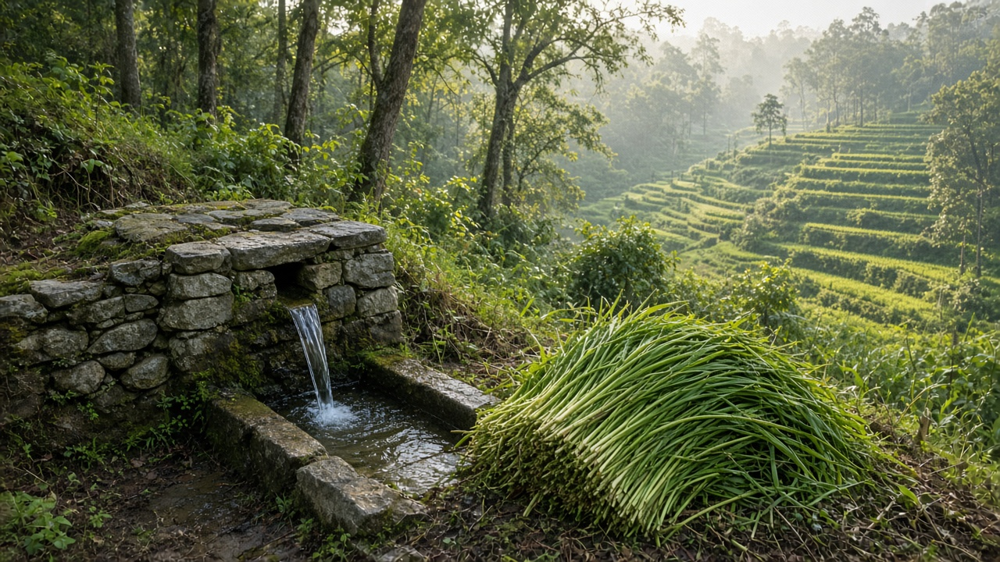

Payment for Ecosystem Services (PES)
Published on August 20, 2026

Payment for Ecosystem Services (PES) is a voluntary or regulated contract in which beneficiaries of a service—clean water, habitat, scenic landscape, or soil retention—pay landholders who manage land to supply it. Classic designs pay upstream farmers to keep vegetative cover that reduces sediment for a downstream city or hydropower plant. Conditionality (payment only if the practice is kept), additionality (change beyond what would have happened), and clear rights over the land are the usual tests. PES is an economic instrument, not a protected-area category: it can sit on private farms, community land, or public leases.
Watershed schemes are often easier to explain than biodiversity contracts because a water utility or municipality can see turbidity and treatment cost. Agricultural PES may pay for buffer strips, reduced dry-season grazing, wetland restoration, or nutrient management that lowers load in streams. Problems arise when payments go to those who already complied, when monitoring is a paper visit, or when the poorest users without title are excluded. Bundling several services in one contract can raise efficiency but also blur what is being bought. Transaction costs—measurement, contracts, and dispute resolution—can swallow small schemes if intermediaries take most of the fee.
Public buyers, including cities, irrigation agencies, and hydropower operators, are frequently more reliable than scattered tourists or distant offset markets. Rules should publish who is paid, for which practice, and how compliance is checked, so the scheme does not become a hidden subsidy. Gender and tenure analysis matters: women who manage springs or fodder may do the work while titled men receive the transfer. Students should judge a PES file by hydrology or habitat evidence, not by the elegance of the contract template. Well-run payments reward stewardship that would otherwise be unpaid labor for people living upstream of someone else's benefit.

पारिस्थितिक सेवा भुक्तानी अर्थात् PES भनेको स्वैच्छिक वा नियमित सम्झौता हो जसमा सेवाका लाभार्थी—सफा पानी, वासस्थान, दृश्य परिदृश्य वा माटो थाम्ने काम—भूमि व्यवस्था गर्ने भूमिपतिलाई तिर्छन्। परम्परागत रचनाले माथिल्लो किसानलाई वनस्पति आवरण राख्न तिर्छ जसले तल्लो सहर वा जलविद्युत्लाई गाद घटाउँछ। सर्तबद्धता (अभ्यास रहँदा मात्र भुक्तानी), थपियता (नभइदिएको भन्दा बढी परिवर्तन) र भूमिमा स्पष्ट अधिकार सामान्य परीक्षा हुन्। PES आर्थिक औजार हो, संरक्षित क्षेत्रको वर्ग होइन: निजी खेत, सामुदायिक भूमि वा सार्वजनिक पट्टामा बस्न सक्छ।
जलाधार योजना जैविक विविधता सम्झौताभन्दा प्रायः बुझ्न सजिलो हुन्छ किनभने पानी सेवा वा नगरपालिकाले धमिलोपन र प्रशोधन लागत देख्छ। कृषि PES ले किनारा पट्टी, सुख्खा याम चराइ कमी, सिमसार पुनर्स्थापना वा खोलाको भार घटाउने पोषक व्यवस्थापनलाई तिर्न सक्छ। पहिले नै पालना गर्नेलाई पैसा जाँदा, निगरानी कागजी भ्रमण हुँदा वा स्वामित्व नभएका गरिब प्रयोगकर्ता छुट्दा समस्या आउँछ। एउटा सम्झौतामा धेरै सेवा बाँध्दा दक्षता बढ्न सक्छ तर के किनिएको हो धमिलो हुन्छ। कारोबार लागत—मापन, सम्झौता र विवाद समाधान—बिचौलियाले शुल्क धेरै लिए साना योजना निल्न सक्छ।
सहर, सिँचाइ निकाय र जलविद्युत् सञ्चालक जस्ता सार्वजनिक खरिदकर्ता छरिएका पर्यटक वा टाढाको पूर्ति बजारभन्दा प्रायः भरपर्दा हुन्छन्। कसलाई, कुन अभ्यासका लागि, पालना कसरी जाँच हुन्छ प्रकाशित नियमले योजना लुकेको अनुदान बन्नबाट रोक्छ। लैङ्गिक र स्वामित्व विश्लेषण चाहिन्छ: मूल वा घाँस व्यवस्था गर्ने महिलाले काम गर्दा स्वामित्व भएका पुरुषले रकमान्तर पाउन सक्छन्। विद्यार्थीले PES मिसिल जलविज्ञान वा वासस्थान प्रमाणले जाँच्नुपर्छ, सम्झौता ढाँचाको सुन्दरताले होइन। राम्रो भुक्तानीले अरूको लाभको माथिल्लो तटीय बिना ज्यालाको हेरचाहलाई मान्यता दिन्छ।

पारिस्थितिक सेवा भुगतान अर्थात् PES स्वैच्छिक या विनियमित अनुबंध है जिसमें सेवा के लाभार्थी—स्वच्छ जल, आवास, दृश्य परिदृश्य या मिट्टी थामना—भूमि प्रबंध करने वाले भूमिधारकों को चुकाते हैं। परम्परागत रचना ऊपरी किसानों को वनस्पति आवरण बनाए रखने के लिए देती है जिससे नीचे शहर या जलविद्युत् के लिए गाद घटती है। शर्तबद्धता (अभ्यास रहने पर ही भुगतान), अतिरिक्तता (अन्यथा से अधिक परिवर्तन) और भूमि पर स्पष्ट अधिकार सामान्य परीक्षाएँ हैं। PES आर्थिक उपकरण है, संरक्षित क्षेत्र की श्रेणी नहीं: निजी खेत, सामुदायिक भूमि या सार्वजनिक पट्टे पर बैठ सकता है।
जलसंभर योजनाएँ जैव विविधता अनुबंधों से अक्सर समझना आसान होती हैं क्योंकि जल सेवा या नगरपालिका मैलापन और उपचार लागत देखती है। कृषि PES किनारा पट्टी, शुष्क मौसम चराई कमी, आर्द्रभूमि पुनर्स्थापना या नाले का भार घटाने वाले पोषक प्रबंधन को चुका सकता है। पहले से पालन करने वालों को धन जाने, निगरानी कागज़ी दौरा होने या स्वामित्वहीन गरीब उपयोगकर्ता छूटने पर समस्या आती है। एक अनुबंध में कई सेवाएँ बाँधने से दक्षता बढ़ सकती है पर क्या खरीदा गया धुंधला होता है। लेनदेन लागत—माप, अनुबंध और विवाद निपटान—बिचौलिया शुल्क अधिक ले तो छोटी योजना निगल सकती है।
शहर, सिंचाई एजेंसी और जलविद्युत् संचालक जैसे सार्वजनिक खरीदार बिखरे पर्यटक या दूर के पूर्ति बाज़ार से अक्सर अधिक विश्वसनीय होते हैं। किसे, किस अभ्यास के लिए, पालन कैसे जाँचा जाएगा यह प्रकाशित नियम योजना को छिपा अनुदान बनने से रोकते हैं। लैंगिक और स्वामित्व विश्लेषण चाहिए: स्रोत या चारा सँभालने वाली महिलाएँ काम करें और स्वामित्व वाले पुरुष अंतरण पाएँ यह आम है। छात्रों को PES मिसिल जलविज्ञान या आवास प्रमाण से जाँचना चाहिए, अनुबंध साँचे की सुंदरता से नहीं। अच्छा भुगतान उस देखरेख को मान्यता देता है जो अन्यथा किसी और के लाभ के ऊपरी तट पर बिना मजदूरी का श्रम होती।